第一部分｜装好 WorkBuddy
01｜AI 办公工作台
能交付什么
想把资料整理、分析和汇报连着做完，可以把整项任务交给 WorkBuddy，让它交出文件。
先看它能帮我们做哪些事：
- 一份资料可以整理成 Word 或 Markdown 文档。
- 一组数据可以整理成 Excel 表格和分析报告。
- 一个汇报需求可以生成 PPT。
- 一个混乱的文件夹可以按要求重新整理。
我们就拿三张门店销售表做例子：把表格所在的文件夹交给 WorkBuddy，要求它分析数据，再生成分析报告和汇报 PPT。
参考：WorkBuddy 简介、快速开始、模块五_课2_WorkBuddy入门（第4页）。
WorkBuddy 怎么干活
你说清目标和材料，WorkBuddy 再拆步骤、选工具。
- 交代任务：告诉它最后要做成什么，以及可以使用哪些资料。
- 执行任务：WorkBuddy 把目标拆成步骤，选择工具，处理资料并生成文件。
- 决定收尾：打开文件验收。符合要求就归档，有问题就指出具体位置，让它返工。
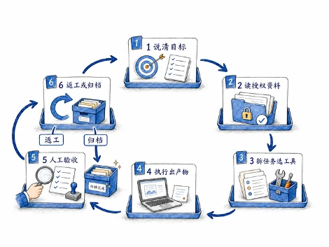
02｜安装与登录
下载客户端
从 WorkBuddy 官网下载与当前电脑匹配的版本。
打开 WorkBuddy 官网，点击下载入口，选择 Windows 或 macOS 版本。
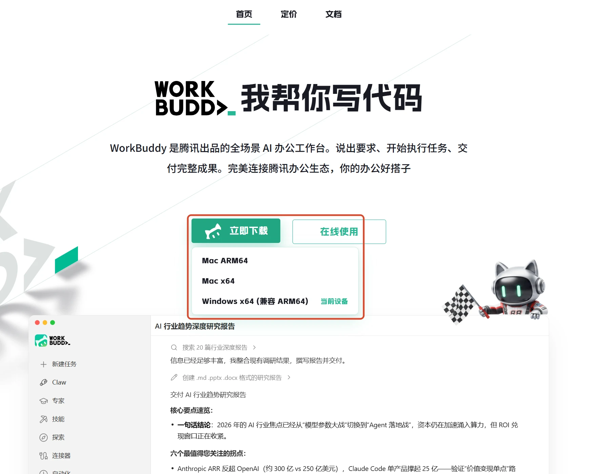
打开安装包
下载完成后，打开安装包进入安装向导。
下载后，到浏览器下载记录或系统下载文件夹里找到安装包，双击打开。下图演示的是 Windows；macOS 用户打开对应文件，按系统提示安装。
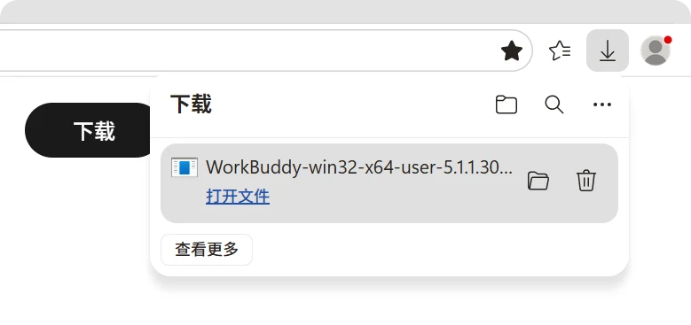
选择安装用户
个人电脑选择“仅为我安装”，可以减少对其他账号的影响。
这一步是在决定电脑上的哪些账号可以使用 WorkBuddy。自己使用的电脑，选“仅为我安装”即可；多人共用时，再判断是否需要给所有用户安装。
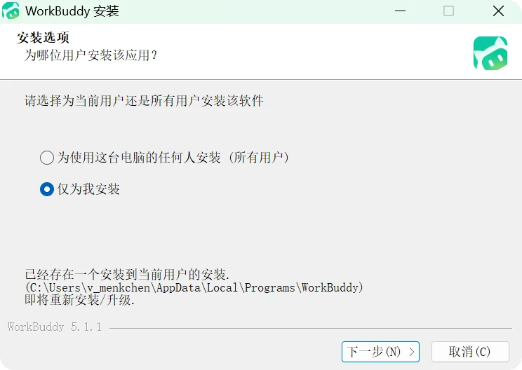
选择安装位置
确认安装位置后，点击“安装”开始写入程序文件。
没有特别的磁盘安排，就保留默认位置。需要更换时，选一个空间充足、不会随手清理的文件夹，再点击“安装”。
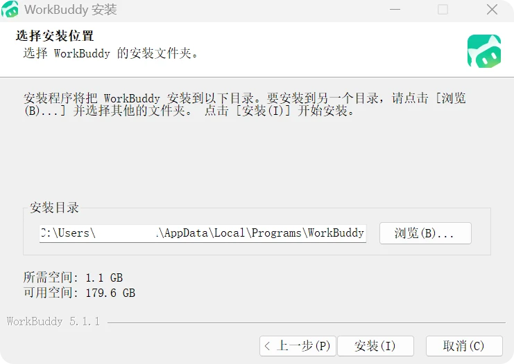
完成安装
看到安装完成页面后，点击“完成”打开 WorkBuddy。
保留“运行 WorkBuddy”的勾选，点击“完成”，就会打开客户端。想稍后再用，可以取消勾选，之后从桌面或应用列表打开。
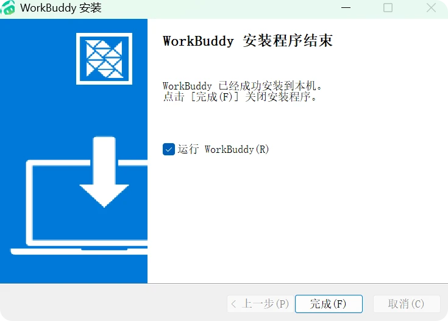
微信扫码登录
在客户端点击登录，再到浏览器里完成微信扫码。
先点击客户端里的登录按钮，再到自动打开的浏览器页面，用微信扫描二维码，并在手机上确认登录。
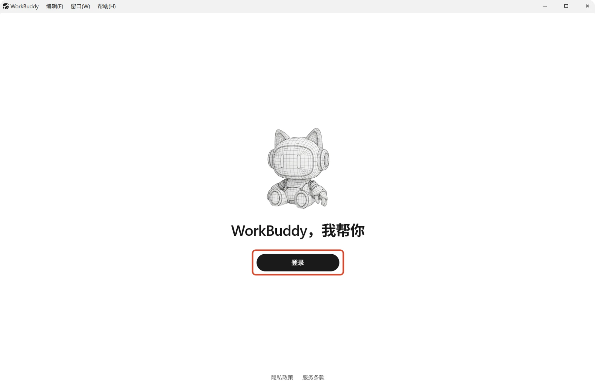
选择账号类型
个人使用选择个人登录，企业账号选择企业登录。
扫码后，按你要使用的账号选择：自己使用就选个人登录；已经加入企业版、需要进入企业空间，就选企业登录。
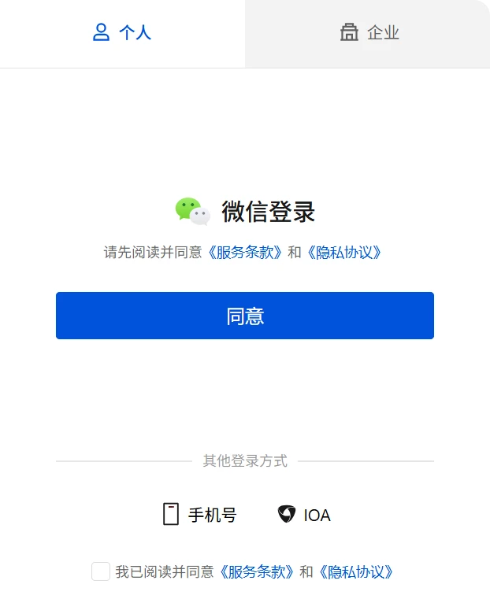
参考：开启你的第一个任务。
第二部分｜跑通一个任务
03｜三个区域
客户端打开了，先认清三个位置：左边找任务，中间提要求，右边看结果。
| 区域 | 这里放什么 |
|---|---|
| 左侧边栏 | 新建入口、任务列表、搜索与账号入口 |
| 中间对话区 | 消息记录、文件附件和输入框 |
| 右侧结果区 | 产物、工作空间文件、文件变更和网页预览 |
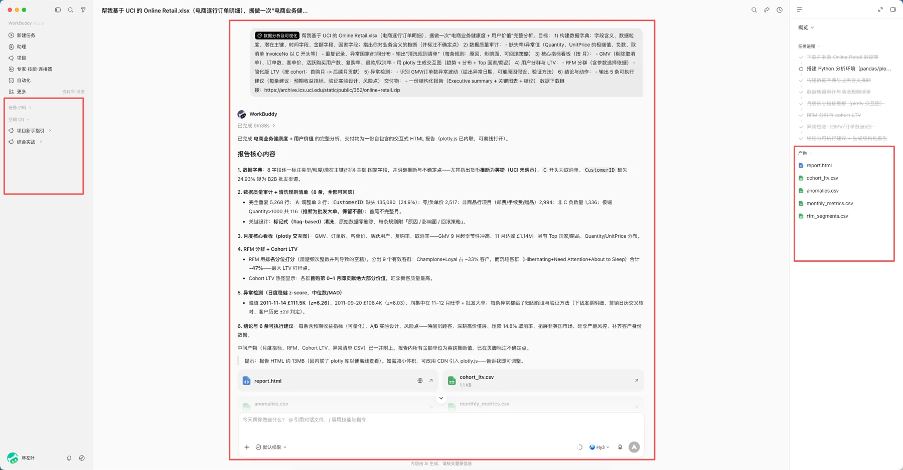
04｜工作空间
工作空间就是这项任务使用的文件夹，先把资料和结果放在哪里定下来。
- 点击输入框左下角的 选择工作空间，选中存放这次任务资料的文件夹
- 选好后，WorkBuddy 会以这个文件夹为基础，读取和处理文件
- 还没有指定文件夹，也可以直接开始；结果会生成在默认目录中
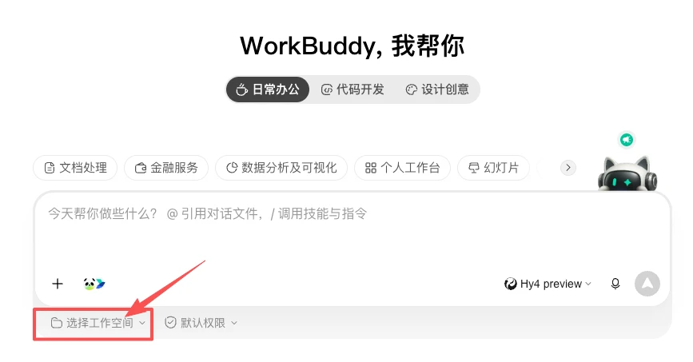
05｜权限边界
工作目录选好后，再看权限：日常用默认权限，重要操作由你确认。
| 权限模式 | 怎样工作 | 适合什么情况 |
|---|---|---|
| 默认权限 | 常规任务继续执行，越过工作空间、删除重要文件、运行脚本或访问敏感能力时请求确认 | 日常文档、表格、资料整理和第一次处理的新任务 |
| 完全访问权限 | 减少确认步骤，可以直接执行更多文件、命令和联网操作 | 隔离、可信、可恢复的临时环境 |
完全访问权限会影响当前客户端里的所有任务。处理客户资料、财务资料、唯一文件，或需要批量删除时，最好保留默认权限。遇到确认提示，先看清它要做什么、对哪个路径操作、影响哪些文件。
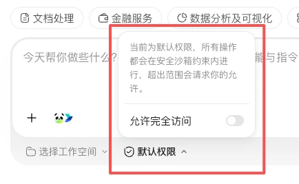
参考：默认权限与安全沙箱。
06｜工作模式
现在想听解释、先看计划，还是直接拿到成品？按这次的需要选工作模式。
| 模式 | 会怎样做 | 适合什么情况 |
|---|---|---|
| 仅问答 Ask | 回答问题、解释资料，不修改文件 | 先摸清资料、确认概念或讨论思路 |
| 计划 Plan | 先补齐信息并给出计划，等你确认后再执行 | 步骤多、方向还没定、改动范围较大的任务 |
| 默认 Agent | 理解要求后直接执行并交付结果 | 目标明确的日常文档、表格和文件处理 |
像整理表格这类目标明确的小任务，可以直接用默认模式。若方向还没定，做错又要花很多时间返工，就先用计划模式，把范围和步骤谈清楚。
同样面对一项工作，问答给解释，计划先画路线，执行交出成品。
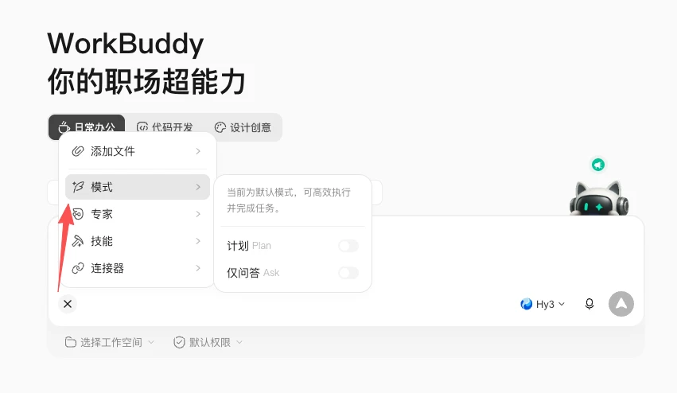
参考：新建任务栏。
07｜模型选择
模型档位先选均衡；确实需要更快响应或更复杂的分析，再换档。
| 模型模式 | 适合什么任务 | 主要取舍 |
|---|---|---|
| 快速模式 | 日常问答、格式转换、小段文字修改 | 响应快，消耗低 |
| 均衡模式 | 写文档、分析数据、多文件处理 | 兼顾效果和速度 |
| 极致模式 | 多步骤推理、复杂分析、需要反复验证的任务 | 用时更长，消耗更高 |
先用均衡模式跑通任务。简单修改等得太久，可以试快速模式；复杂分析需要更多推理和验证，可以试极致模式，同时留意用时和消耗。
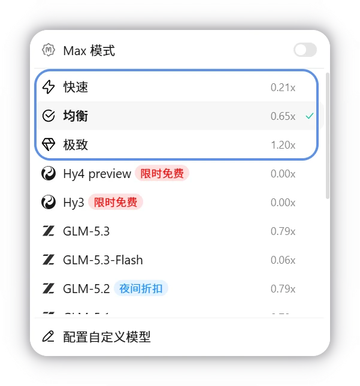
参考：模型配置。
08｜发出任务
设置选好了，再把任务说完整，减少 WorkBuddy 靠猜来补信息。
四项说清楚
- 目标：最后要解决什么问题。
- 材料：使用哪个文件夹、文件或截图。
- 交付：要得到什么文件，保存在哪里。
- 限制：时间范围、字数、风格、不能改动的内容。
示例
分析“8月销售分析”文件夹里的三张门店销售表，找出销售额和毛利变化最大的品类。生成一份不超过10页的汇报PPT，关键结论注明对应表格和字段，保存回当前工作空间。原始销售表不要修改。
材料还没带上时，可以拖入文件、粘贴截图，或用 @ 引用工作空间里的文件。先确认引用的是这次要处理的资料。
只报任务名像只说“出发”，目标和材料说清楚，工作才有方向。 参考：创建任务、新建任务栏。
09｜跟进执行
任务开始后，在原对话里查看进度、补材料和提修改。
执行中可以做什么
- 看它正在分析哪些资料、生成哪些文件，哪些步骤已经完成。
- 发现它缺少资料，就在对话里上传文件或补充说明。
- 发现方向偏了，就指出具体问题；需要重新开始时，先停止执行再重做。
- 同时创建其他任务，让多项工作并行推进，再从侧边栏切换查看。
修改意见要落到对象上
把汇报里的第二张图改成按月份比较的折线图，保留原始数据表，结论部分补充毛利下降最大的两个品类。
比如这份销售汇报只需要换图、补结论，就留在原任务里，让 WorkBuddy 沿用已有资料。若改做另一项工作，目标已经不同，再新建任务。
10｜验收结果
看到“完成”还要再走一步：打开文件，检查它是否完成了你的任务。
右侧结果区提供四种检查入口
- 产物：打开生成的 PPT、PDF、文档或表格，先看内容能否使用。
- 工作空间文件：检查保存目录是否正确、所需文件是否齐全。
- 变更：看它动过哪些文件，再确认具体修改了什么。
- 浏览器：预览网页、页面原型或可以直接打开的结果。
验收时重点看三件事
- 结果是否回答了原任务，例如找出了销售额和毛利变化最大的品类。
- 文件名、格式和保存位置是否正确。
- 对照文件变更，确认原文件和无关文件没有被误改。
第三部分｜用好长期记忆
11｜记忆怎样工作
第一项任务跑通后，还可以让 WorkBuddy 记住稳定的背景和习惯，在以后的相关任务里参考。
- 整理会话：系统每晚读取当天的会话历史。
- 形成记忆：从中提取事实、偏好、人物关系和近期跟进事项，整理成记忆数据。
- 匹配任务：收到新请求时，查找与当前任务相关的记忆。
- 带入背景：把匹配到的记忆放进当前任务，帮助 WorkBuddy 理解你的要求。
记忆只带入与当前任务相关的背景。比如它记得你经营门店，也不等于它已经拿到本月销售表；这次的材料和具体要求仍要提供。
记忆带来相关背景，这一次的任务仍要带上自己的材料。 参考：记忆。
12｜写入记忆
要它长期记住什么，就直接说清内容和适用范围。
适合写进记忆的内容
- 稳定背景：我经营三家烘焙门店，日常汇报主要看销售额、毛利和复购。
- 长期偏好：以后写经营汇报，先给结论，再放数据和行动建议。
- 固定口径：提到“老客”时，指过去90天内购买过两次以上的客户。
- 持续事项：未来一个月持续跟进秋季会员活动，相关任务沿用同一套活动背景。
说法示例
请记住：以后为我整理经营周报时，开头先用三句话写清结果、问题和下一步，正文再放数据依据。这个要求适用于所有门店周报。
记忆要说清适用范围。“所有门店周报都这样写”是长期习惯；“这一次只写三页”是临时要求，放在当前任务里即可，避免影响其他工作。
参考：记忆。
13｜管理记忆
背景和习惯会变，记忆也要定期检查，过期就改，错误就删。
要检查它记住了什么，点击左侧边栏底部头像，进入“设置”，再打开“记忆”：
- 查看：阅读系统整理出的记忆摘要，确认它记住了什么。
- 改正：用对话告诉 WorkBuddy 哪一条发生了变化，以及新的说法是什么。
- 删除：清除过期、错误或不希望继续使用的记忆。
- 关闭：不希望系统继续从新会话中整理记忆时，可以一键关闭。
示例
忘记“每份汇报控制在5页以内”这条偏好。以后只有月度经营会使用5页限制，其他汇报按内容决定页数。
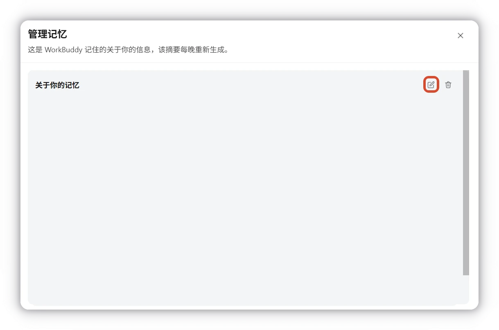
14｜导入记忆
以前已经让其他 AI 熟悉了你的工作习惯，可以整理成摘要，再导入 WorkBuddy。
在“记忆”页面中选择“导入”：
- 复制页面提供的提示词，发送给你过去常用的 AI 产品。
- 让原来的 AI 整理它已经了解的背景、偏好和习惯。
- 把整理结果粘贴回 WorkBuddy，检查内容后添加到记忆。
- 删除过期信息，补充适用范围，再开始新的任务。
导入时重点保留稳定的工作背景和表达偏好，不必搬来全部聊天记录。先读一遍摘要，删掉过期信息、补清适用范围，才方便在新任务中沿用。
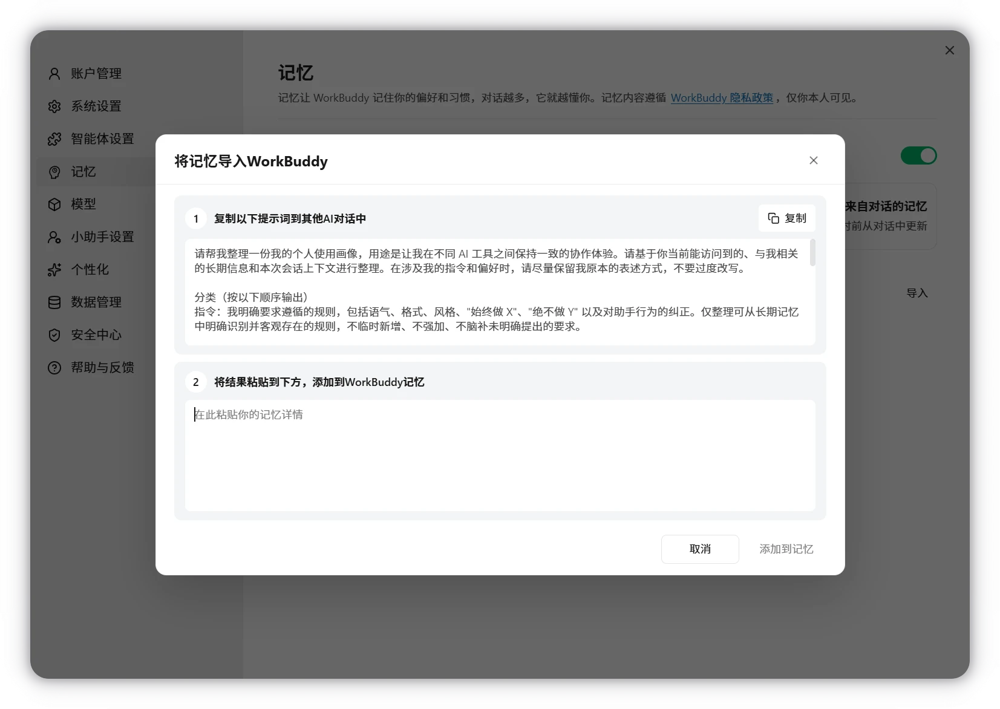
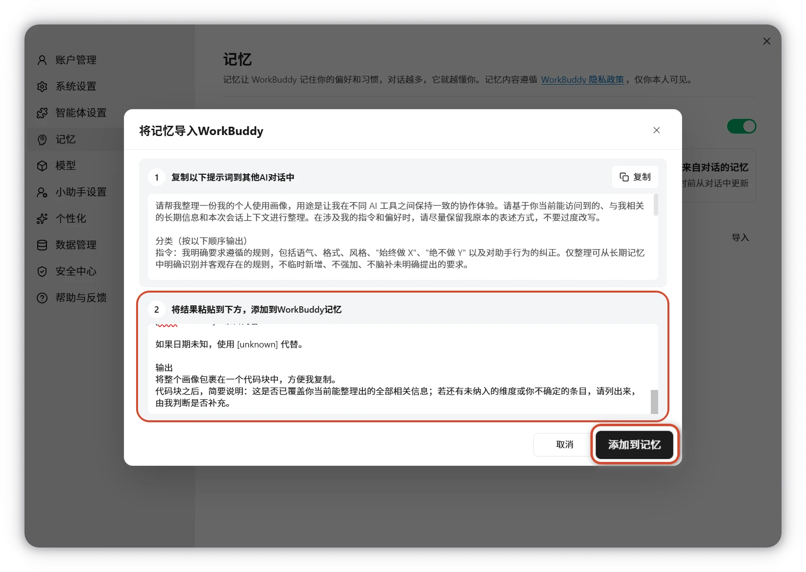
参考：记忆。
小结
- WorkBuddy 负责交付：把整件工作说明白，它会读取资料、规划步骤、执行并生成文件。
- 工作空间负责边界：一项任务一个文件夹，日常保持默认权限，重要动作由人确认。
- 对话与结果区负责协作：在对话里跟进和修改，在结果区查看产物、文件与变更。
- 记忆负责长期配合：把稳定背景和偏好交给记忆，定期检查、改正和清理。
选一份真实资料，走完“选文件夹—说清任务—跟进—验收”。下一课，我们就用这套方法处理陌生行业的资料。